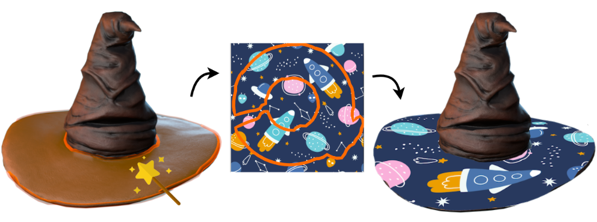
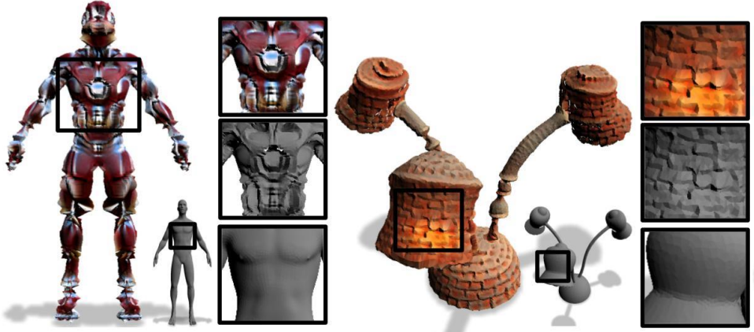
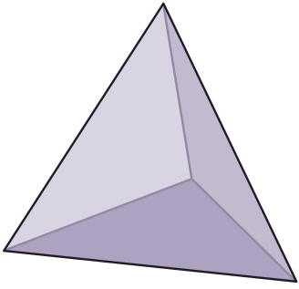

Publications

DA Wand: Distortion-Aware Selection using Neural Mesh Parameterization
Richard Liu, Noam Aigerman, Vladimir G. Kim, Rana Hanocka
ArXiv, 2022
Paper
Website

Text2Mesh: Text-Driven Neural Stylization for Meshes
Oscar Michel*, Roi Bar-On*, Richard Liu*, Sagie Benaim, Rana Hanocka
CVPR Oral, 2022
Paper
Website
Talks



Blog